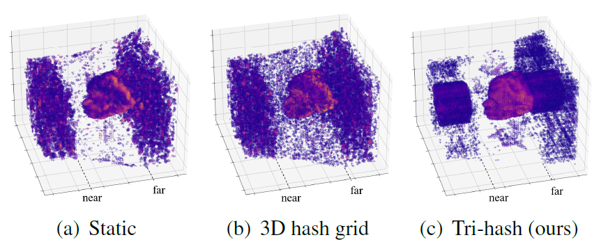
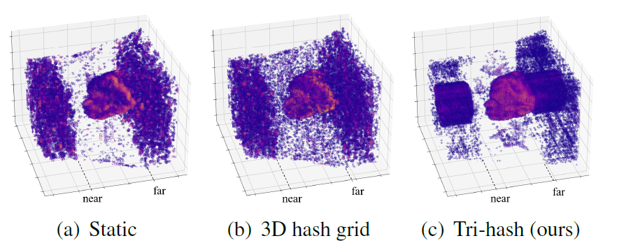
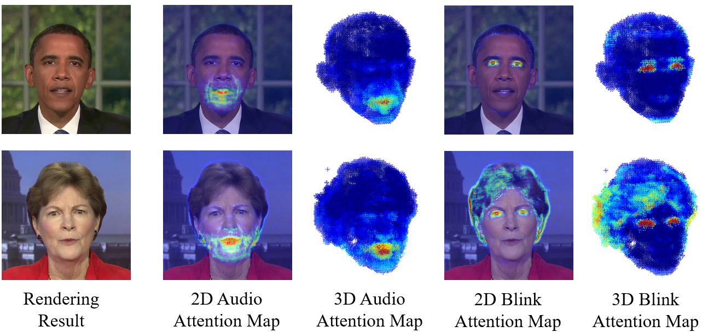

Tri-Hash
After being required to handle audio features and learn the dynamic motions at the same time, The MLP decoder of the 3D hash grid becomes overloaded, while our representation can still reconstruct the fine surface.
This paper presents ER-NeRF, a novel conditional Neural Radiance Fields (NeRF) based architecture for talking portrait synthesis that can concurrently achieve fast convergence, real-time rendering, and state-of-the-art performance with small model size.
Our idea is to explicitly exploit the unequal contribution of spatial regions to guide talking portrait modeling. Specifically, to improve the accuracy of dynamic head reconstruction, a compact and expressive NeRF-based Tri-Plane Hash Representation is introduced by pruning empty spatial regions with three planar hash encoders. For speech audio, we propose a Region Attention Module to generate region-aware condition feature via an attention mechanism. Different from existing methods that utilize an MLP-based encoder to learn the cross-modal relation implicitly, the attention mechanism builds an explicit connection between audio features and spatial regions to capture the priors of local motions. Moreover, a direct and fast Adaptive Pose Encoding is introduced to optimize the head-torso separation problem by mapping the complex transformation of the head pose into spatial coordinates.
Extensive experiments demonstrate that our method renders better high-fidelity and audio-lips synchronized talking portrait videos, with realistic details and high efficiency compared to previous methods.
After being required to handle audio features and learn the dynamic motions at the same time, The MLP decoder of the 3D hash grid becomes overloaded, while our representation can still reconstruct the fine surface.
Even if influenced by some uncertain details like fluffy hair, our region attention module successfully captures the relation between dynamic conditions and spatial regions without explicit annotation.
Demo with chinese speech, trained with only one 90-second long video clip.
Comarison with current SOTA baselines. Zoom in for better visualization.
ER-NeRF achieves best on lip-sync, rendering quality, training and inference speed, and model size amoung current NeRF-based methods. The comparison with DFRF and GeneFace, which are designed for different settings, can be found in the supplementary document.
@InProceedings{li2023ernerf,
author = {Li, Jiahe and Zhang, Jiawei and Bai, Xiao and Zhou, Jun and Gu, Lin},
title = {Efficient Region-Aware Neural Radiance Fields for High-Fidelity Talking Portrait Synthesis},
booktitle = {Proceedings of the IEEE/CVF International Conference on Computer Vision (ICCV)},
month = {October},
year = {2023},
pages = {7568-7578}
}